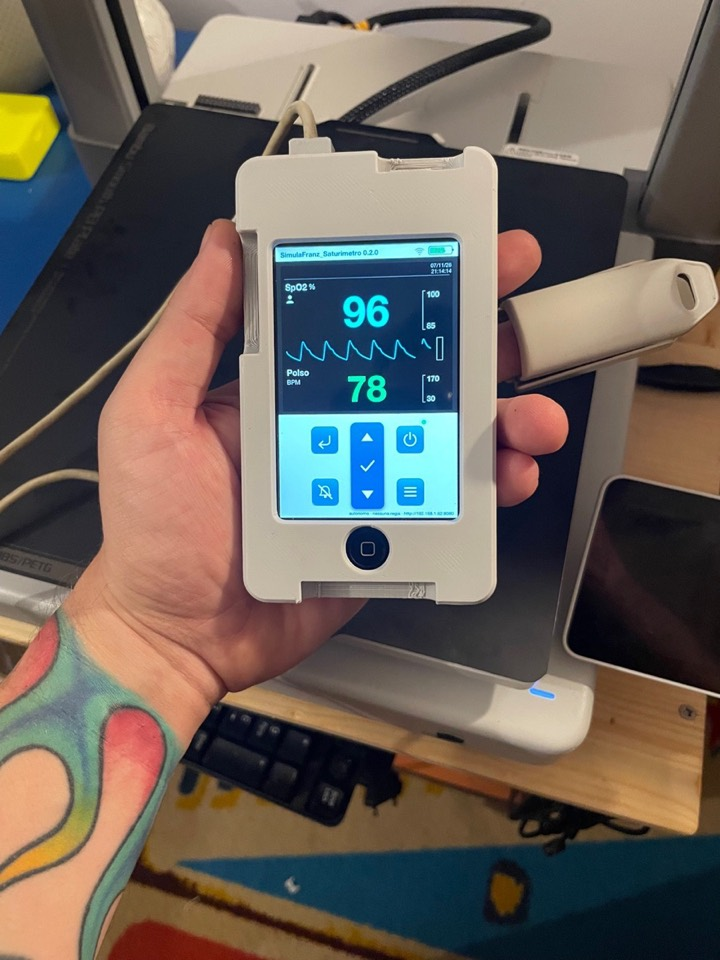
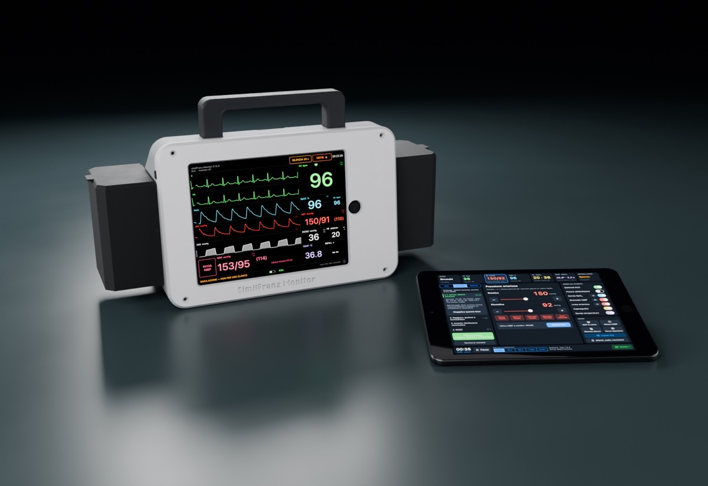
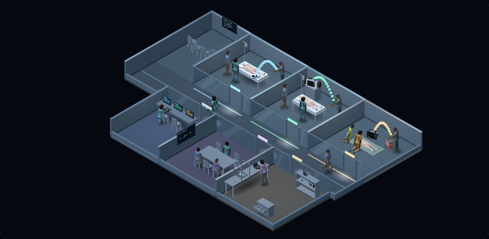

Open source · simulazione sanitaria
Apri quel cassetto: dentro c'è una sala di simulazione.
L'iPad®, l'iPod touch® e il tablet Android™ che avevi messo da parte diventano monitor, defibrillatore e saturimetro per la tua simulazione sanitaria. Nessun abbonamento, nessun account, nessun costo ricorrente. Tu conduci lo scenario, la squadra cresce.



L'ecosistema
Tre strumenti, una sola idea.
Dai al tuo scenario la fedeltà funzionale che serve, con quello che hai già in un cassetto. Un pomeriggio di lavoro, una stampante 3D, e un dispositivo dimenticato torna a fare la sua parte.
Come lavorano insieme
Scegli una sala ed entra nello scenario.
In ogni sala c'è un manichino, un gruppo di partecipanti e un istruttore con la regia in mano. Entra, dai un cue dalla regia e guarda il dispositivo rispondere e la squadra muoversi.

Passa su una sala per vedere di che cosa si tratta, tocca per entrare.
Collegati ovunque. Monitor e controller si parlano direttamente: li accendi e sei in scenario, in sala, in reparto o in palestra. Il saturimetro si collega all'hotspot del tuo telefono. E dove c'è un Wi-Fi® che copre la sala, dal computer apri le regie web dei monitor. Nelle sale, la scia di luce fra l'istruttore e il dispositivo è questo collegamento.
Il metodo
Prima il metodo, poi lo strumento.
similFranz nasce in sala di simulazione e ne segue il ciclo. Lo strumento fa una cosa sola, sostiene il tuo lavoro, e ti lascia lo sguardo libero per osservare le persone.
Familiarizzazione
Presenti il dispositivo al gruppo: come si accende, dove vanno le sonde, che cosa sa fare. Condividi gli obiettivi di apprendimento. Chi conosce lo strumento si sente al sicuro, e chi si sente al sicuro impara.
Scenario
I partecipanti agiscono, tu faciliti. Dai il cue giusto al momento giusto, segui le loro decisioni, tieni lo scenario allineato agli obiettivi. Il registro lavora da solo.
Debriefing
Parti dai fatti: tempi, scariche, azioni critiche. «Che cosa vi ha fatto riconoscere l'arresto?». I dati aprono la riflessione, il gruppo la costruisce.
Parti da qui · sviluppo guidato dall'IA
L'idea e il primo sviluppo sono già fatti. Il resto puoi farlo tu.
similFranz mette a disposizione l'idea e un primo sviluppo completo, costruito con Claude Code sotto la guida e la verifica dell'autore. Il codice è aperto: chiunque può partire da qui, adattarlo al proprio centro e portarlo oltre, con lo stesso metodo.
Prendi il progetto
Fai una copia (fork) della repository su GitHub®: codice, guide, gusci da stampare e test sono tutti lì, con le loro licenze aperte.
Riparti con l'IA
Apri Claude Code nella cartella: il file CLAUDE.md gli spiega il progetto, le regole e come si prova. Descrivi che cosa ti serve per il tuo scenario.
Verifica e condividi
Più di mille controlli automatici ti dicono se una modifica rompe qualcosa. Poi racconta alla comunità che cosa hai migliorato.
Quanto lavoro c'è già dentroIl conto del primo sviluppo, misurato dai registri delle sessioni.
Un punto di partenza onesto anche per stimare un progetto simile nel tuo centro. Come leggere i numeri: «Token nuovi» sono il testo che il modello ha letto per la prima volta più quello che ha scritto: è la misura più vicina al lavoro vero. A ogni passo il modello rilegge anche la conversazione già vista: contando queste riletture (cache) il totale sale a circa 5,9 miliardi di token. I totali sono misure; la ripartizione per filone è una stima fatta sugli argomenti di ogni sessione. I registri coprono solo il periodo indicato: il lavoro precedente, come la prima versione del saturimetro, non è contato.
Chi c'è dietro
Fatto in casa, pensato per la sala.
Francesco Palmisano, per tutti ilFranz. Costruisce similFranz un dispositivo alla volta, per formatori, istruttori e facilitatori di simulazione che vogliono portare in sala strumenti credibili con poche risorse. ORCID 0009-0009-9368-0212
Il codice nasce con l'aiuto di Claude Code, sotto la sua guida e la sua verifica. Ogni scelta resta nelle sue mani.
Usalo, citalo, miglioralo. Se similFranz ti è utile in un corso, un poster, una tesi o un articolo, usalo liberamente: è nato per questo. Citarlo è il modo più semplice per far sapere ad altri formatori, istruttori e facilitatori di simulazione che esiste, e per tenere unita la rete di chi lo usa. Ogni strumento ha il suo DOI su Zenodo e la citazione già pronta, nella sua pagina. E se lo migliori, raccontalo su GitHub®, nella repository di ciascun progetto: segnalazioni, idee e modifiche sono benvenute.
Costruiscilo, portalo nei tuoi scenari e racconta che cosa hai migliorato: ogni idea che arriva dalla sala rende lo strumento migliore per tutta la comunità della simulazione. Altri dispositivi sono in cantiere.